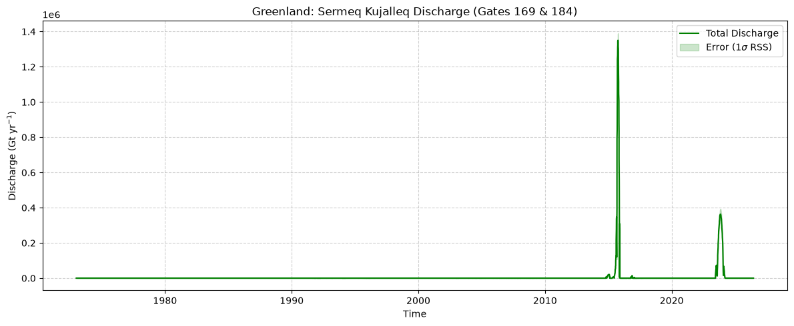

Grounding line discharge (advanced)#
This notebook demonstrates how to process cloud-hosted ice velocity Zarr stores (Greenland and Antarctica) alongside local ice thickness and flux gate datasets. It calculates the time-varying grounding line discharge using Dask for out-of-core computation.
For the actual computation, we will only focus on a single outlet in west Greenland, so that this runs quickly on a PC. It could of course be scaled up to the entirety of both ice sheets, but that would take longer to compute.
1. Imports and Dask setup#
First, we import the necessary libraries and spin up the Dask cluster, ensuring the Zarr HTTP configurations are set up to handle large parallel requests.
import dask
import zarr
import fsspec
import numpy as np
import xarray as xr
import pandas as pd
import geopandas as gpd
from shapely.geometry import LineString, MultiLineString
from scipy.signal import savgol_filter
from scipy.interpolate import interp1d
from dask.distributed import Client, LocalCluster, progress
# Spin up a local Dask cluster
cluster = LocalCluster(n_workers=4, threads_per_worker=2)
client = Client(cluster)
# Cap Zarr's internal HTTP concurrency per worker
zarr.config.set({"async.concurrency": 2})
# Configure the HTTP backend
s3_options = {
"anon": True,
"config_kwargs": {
"max_pool_connections": 50,
"retries": {
"max_attempts": 10,
"mode": "standard"
}
}
}
print(f"Dask Dashboard: {client.dashboard_link}")
Dask Dashboard: http://127.0.0.1:8787/status
2. Define file paths & global constants#
# Cloud Zarr URLs
antarctica_url = "s3://us-west-2.opendata.source.coop/uos-shiver/antarctica/antarctica_multisource_velocity_timeseries.zarr"
greenland_url = "s3://us-west-2.opendata.source.coop/uos-shiver/greenland/greenland_multisource_velocity_timeseries.zarr"
# Local Data Paths
ant_gate_path = r"D:\work\Fellowship_Leeds\Papers\Research\AIS_discharge\v3\out\pub\gates\flux_gates.shp"
grn_gate_path = r"D:\work\Fellowship_Leeds\Data\grounding_line_discharge\Greenland\Mankoff\gates.gpkg"
ant_thick_path = r"D:\work\Fellowship_Leeds\Data\Elevation\Antarctica\BedMap3\grid\bedmap3.nc"
grn_thick_path = r"D:\work\Fellowship_Leeds\Data\Elevation\Greenland\BedMachine\v5.2\BedMachineGreenland-v5.nc"
# Constants
GATE_SPACING = 200.0 # meters
ICE_DENSITY = 917.0 # kg/m^3
3. Core processing functions#
These functions handle the geometric discretization of the flux gates, calculate the local gate angles and apply the temporal filters.
def extract_gate_points(gdf, spacing=200.0, keep_first_only=False):
"""
Extracts points along geometries at a fixed spacing.
Handles Polygons (like Mankoff's gates) by extracting a single edge
to prevent double-counting the discharge.
"""
if keep_first_only:
gdf = gdf.iloc[[0]]
def _extract_longest_edge(polygon):
"""Splits a polygon perimeter at its furthest vertices and returns the longest half."""
coords = list(polygon.exterior.coords)
c_arr = np.array(coords)
# Calculate distances between all pairs of vertices to find the two ends
diff = c_arr[:, np.newaxis, :] - c_arr[np.newaxis, :, :]
sq_dists = np.sum(diff**2, axis=-1)
# Get indices of the two vertices furthest apart
idx1, idx2 = np.unravel_index(np.argmax(sq_dists), sq_dists.shape)
if idx1 > idx2:
idx1, idx2 = idx2, idx1
# Split the perimeter loop into two paths
path1 = coords[idx1:idx2+1]
path2 = coords[idx2:] + coords[:idx1+1]
# Return the longest path as a LineString
if len(path1) > 1 and len(path2) > 1:
line1 = LineString(path1)
line2 = LineString(path2)
return line1 if line1.length > line2.length else line2
else:
return LineString(coords) # Fallback
points = []
for geom in gdf.geometry:
if geom is None:
continue
lines = []
if geom.geom_type == 'LineString':
lines = [geom]
elif geom.geom_type == 'MultiLineString':
lines = list(geom.geoms)
elif geom.geom_type == 'Polygon':
lines = [_extract_longest_edge(geom)]
elif geom.geom_type == 'MultiPolygon':
lines = [_extract_longest_edge(poly) for poly in geom.geoms]
for line in lines:
if not line.is_empty:
distances = np.arange(0, line.length, spacing)
for d in distances:
pt = line.interpolate(d)
points.append((pt.x, pt.y))
if len(points) == 0:
raise ValueError(f"No points were extracted! Found geometry types: {gdf.geom_type.unique()}")
# Convert to DataArrays for xarray advanced indexing
pts_arr = np.array(points)
gate_x = xr.DataArray(pts_arr[:, 0], dims="point")
gate_y = xr.DataArray(pts_arr[:, 1], dims="point")
return gate_x, gate_y
def calculate_gate_angles(gate_x, gate_y, spacing=200.0):
"""
Calculates the angle of the flux gate normal.
"""
x_vals = gate_x.values
y_vals = gate_y.values
d = np.arange(len(x_vals)) * spacing
# Calculate gradients with respect to path distance
fx = np.gradient(x_vals, d)
fy = np.gradient(y_vals, d)
# Calculate angle (theta)
gate_theta = np.arctan2(fy, fx)
return xr.DataArray(gate_theta, dims="point")
def apply_savgol_filter(da, window_days=91, polyorder=2):
"""
Applies a Savitzky-Golay filter across the time dimension using xr.apply_ufunc
to ensure it works efficiently across Dask chunks.
"""
def _savgol(y):
# Window length must be odd
wl = window_days if window_days % 2 != 0 else window_days + 1
return savgol_filter(y, window_length=wl, polyorder=polyorder, axis=-1)
return xr.apply_ufunc(
_savgol,
da,
input_core_dims=[['time']],
output_core_dims=[['time']],
vectorize=True,
dask='parallelized',
output_dtypes=[float]
)
4. Discharge computation#
Next, we pre-process the velocity data (extraction, gap filling, smoothing, calculation of cross-gate velocity) and error data.
The discharge equations are implemented as follows:
Cross-gate velocity: $V_{\perp} = \vert{}V_x \sin(\theta) - V_y \cos(\theta)\vert{}$
Pixel-wise discharge: $Q_i = V_{\perp i} \times H_i \times W$
Pixel error (quadrature): $\delta Q_i = Q_i \times \sqrt{0.1^2 + 0.1^2}$
Total discharge: $Q = \sum Q_i$
Total error (RSS): $\delta Q = \sqrt{\sum (\delta Q_i)^2}$
def crop_spatial_bbox(ds, gate_x, gate_y, buffer=1000.0):
"""Crops 3D Zarr store to gate bounding box to minimize cloud I/O."""
xmin, xmax = gate_x.min().item() - buffer, gate_x.max().item() + buffer
ymin, ymax = gate_y.min().item() - buffer, gate_y.max().item() + buffer
x_slice = slice(xmin, xmax) if ds.x[0] < ds.x[-1] else slice(xmax, xmin)
y_slice = slice(ymin, ymax) if ds.y[0] < ds.y[-1] else slice(ymax, ymin)
return ds.sel(x=x_slice, y=y_slice)
def process_ice_sheet(zarr_url, gates_gdf, thick_path, thick_var, is_antarctica=False):
# 1. Flux Gates & Geometry
gate_x, gate_y = extract_gate_points(gates_gdf, spacing=GATE_SPACING, keep_first_only=is_antarctica)
gate_theta = calculate_gate_angles(gate_x, gate_y, spacing=GATE_SPACING)
# 2. Ice Thickness
ds_thick = xr.open_dataset(thick_path)
thick_da = ds_thick[thick_var]
thickness = crop_spatial_bbox(thick_da, gate_x, gate_y).sel(x=gate_x, y=gate_y, method="nearest").load()
# 3. Cloud Zarr Bounding Box Extraction
ds_vel = xr.open_dataset(zarr_url, engine="zarr", storage_options=s3_options)
# Crop spatially FIRST, then load bounding box into memory
ds_sub = crop_spatial_bbox(ds_vel[["vx", "vy"]], gate_x, gate_y).load()
# Direct vectorized sampling in memory
vx = ds_sub["vx"].sel(x=gate_x, y=gate_y, method="nearest")
vy = ds_sub["vy"].sel(x=gate_x, y=gate_y, method="nearest")
# 4. Temporal Processing (Fast In-Memory)
if not vx.indexes["time"].is_unique:
vx, vy = vx.groupby("time").mean(), vy.groupby("time").mean()
vx, vy = vx.sortby("time"), vy.sortby("time")
vx_filled = vx.interpolate_na(dim="time", method="linear").bfill("time").ffill("time")
vy_filled = vy.interpolate_na(dim="time", method="linear").bfill("time").ffill("time")
# Smooth with Savitzky-Golay
wl = 91 if 91 % 2 != 0 else 92
vx_smooth = xr.DataArray(savgol_filter(vx_filled.values, window_length=wl, polyorder=2, axis=0), coords=vx.coords, dims=vx.dims)
vy_smooth = xr.DataArray(savgol_filter(vy_filled.values, window_length=wl, polyorder=2, axis=0), coords=vy.coords, dims=vy.dims)
# 5. Flux Computation
gate_ctv = abs(vx_smooth * np.sin(gate_theta) - vy_smooth * np.cos(gate_theta))
pixel_discharge = gate_ctv * thickness * GATE_SPACING * ICE_DENSITY * 1e-12
pixel_error = pixel_discharge * np.sqrt(0.1**2 + 0.1**2)
total_discharge = pixel_discharge.sum(dim="point", skipna=True)
total_error = np.sqrt((pixel_error**2).sum(dim="point", skipna=True))
return total_discharge, total_error
5. Compute Greenland#
print("Loading Greenland flux gates...")
# Load the full geopackage
grn_gates_full = gpd.read_file(grn_gate_path)
# Filter for Sermeq Kujalleq / Jakobshavn gates using the 'gate' column
target_gates = [169, 184]
sermeq_gates = grn_gates_full[grn_gates_full['gate'].isin(target_gates)]
print(f"Filtered down to {len(sermeq_gates)} gate polygons.")
# Execute discharge calculation
grn_discharge, grn_error = process_ice_sheet(
zarr_url=greenland_url,
gates_gdf=sermeq_gates,
thick_path=grn_thick_path,
thick_var="thickness",
is_antarctica=False
)
print(f"Sermeq Kujalleq computations complete. Length of timeseries: {len(grn_discharge)}")
Loading Greenland flux gates...
Filtered down to 88 gate polygons.
Sermeq Kujalleq computations complete. Length of timeseries: 5302
6. Plot#
import matplotlib.pyplot as plt
fig, ax = plt.subplots(figsize=(12, 5))
# Plot Greenland (Sermeq Kujalleq)
ax.plot(grn_discharge.time, grn_discharge, color='green', label='Total Discharge')
ax.fill_between(
grn_discharge.time,
grn_discharge - grn_error,
grn_discharge + grn_error,
color='green', alpha=0.2, label=r'Error (1$\sigma$ RSS)'
)
# Set labels and title
ax.set_title("Greenland: Sermeq Kujalleq Discharge (Gates 169 & 184)")
ax.set_ylabel(r"Discharge (Gt yr$^{-1}$)")
ax.set_xlabel("Time")
ax.legend()
ax.grid(True, linestyle="--", alpha=0.6)
plt.tight_layout()
plt.show()
